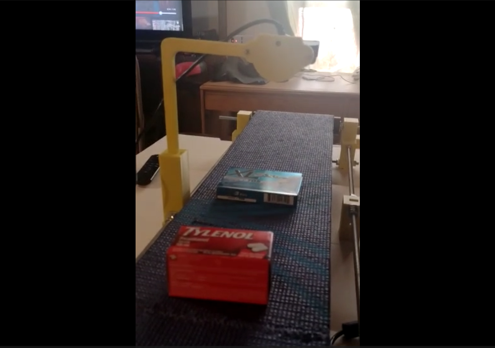

Visual detector conveyor system with CNN to keep track of a medicine order (2021)
Description
This was my final project for the course “Graphic animation fundamental” (Note: even if the name of the course is about Graphic animation, the content of the course was actually “Introduction to computer vision”). This project consists of developing a conveyor system from scratch and using a camera with a CNN (VGG-16), to classify different kinds of medicines, and therefore keep the track of a hypothetical medicine order in a big pharmacy.
My contribution to the project was:
- Developed the entire mechanic system of the conveyor, by using 3D-printed joint parts and endless screws as structure materials
- Developed the control system of the conveyor using a microcontroller and a stepper motor to keep track of each medicine by using serial communication
- Developed and trained the CNN (VGG-16) using own photos and augmentation for each different type of medicine
